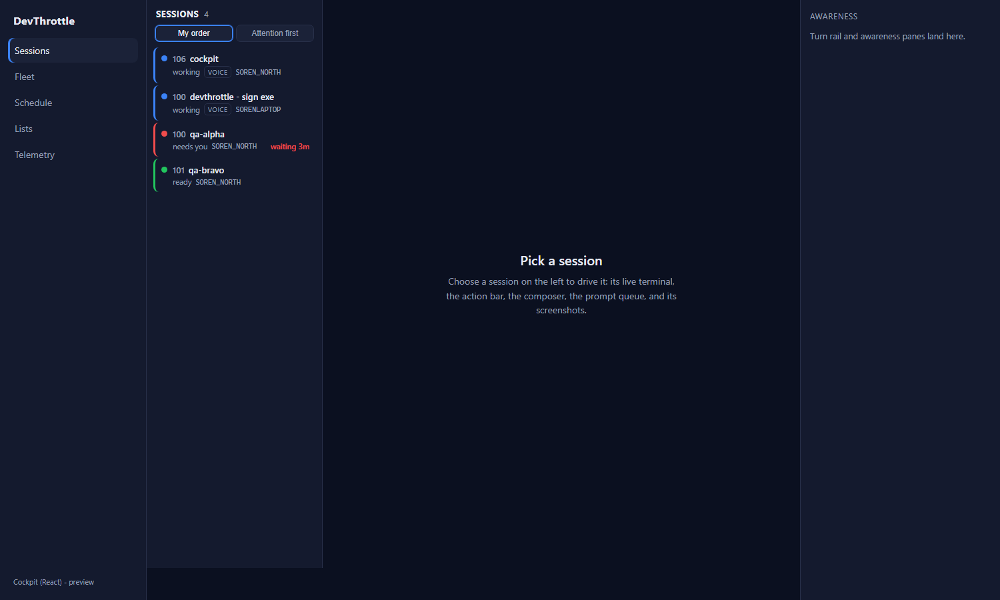
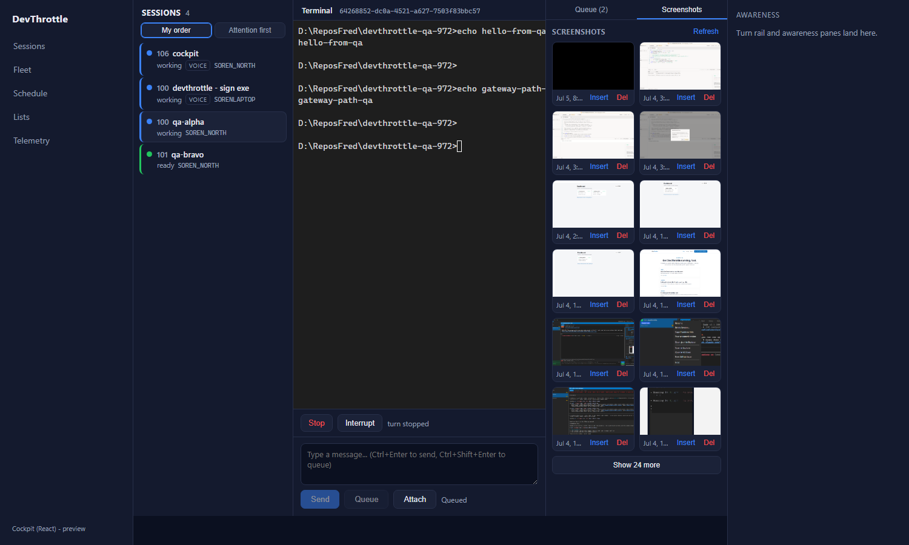

VERDICT: QA FAILED (flow:qa-failed)
PR #993, branch issue-972-roster-reply-bar, commit b3c4edb6. Verified independently
by the QA Agent in an isolated worktree, a freshly built isolated Director (slot 15, Control API 7880),
and a fresh npm install. The four functional acceptance criteria were driven live through the
real Gateway (127.0.0.1:7878, same-origin via the dev proxy) against real sessions. All four
PASS. However, the cockpit production build is broken by this PR, which the PR falsely claims
is clean. That is a release-blocking regression, so the issue does not pass.
| # | Criterion | Expected | Actual (through real Gateway) | Result |
|---|---|---|---|---|
| 1 | Rail lists every session across the fleet with correct state and the default ordering | Fleet-wide roster; default = manual "My order" (attention-first opt-in only) | 4 fleet sessions across MACHINE-A + MACHINE-B with per-session status dots (qa-alpha "needs you" red, qa-bravo "ready" green, cockpit/sign-exe "working" blue). "My order" button aria-pressed=true by default; "Attention first" aria-pressed=false. Toggling groups into needs-you/active/on-hold buckets. See gw-01-roster-fleet.png | PASS |
| 2 | Selecting a session drives the terminal pane and the reply bar | Row click -> /session/{sid}; terminal + action bar + composer render | Selecting qa-alpha navigated to /c/session/64268852...; TerminalPane, action bar (Stop, Interrupt from driverCapabilities), and composer all mounted. See gw-02-selected.png |
PASS |
| 3 | Send, Queue, Interrupt, and Escape all act on a real session through the Gateway | Each verb HTTP 200 through the Gateway and acts on the session | POST /prompt 200 (terminal echoed echo gateway-path-qa), POST /queue 200 (Queue tab -> (2)), POST /interrupt 200 ("interrupted"), POST /escape 200 ("turn stopped"). All root-relative, all through 127.0.0.1:7878. See gw-03..gw-05, verb-results-gateway.json |
PASS |
| 4 | No absolute URLs in the client (lint rule passes) | npm run lint clean |
eslint (Gateway-only-ingress rule) exit 0 | PASS |
| + | Screenshot upload + gallery (PR scope) | Gallery lists via GET /sessions/{sid}/screenshots; upload via POST /upload-image; both by session id through the Gateway | Through the Gateway: GET /screenshots 200 -> 12 thumbnails rendered (each /screenshots/file 200); composer Attach -> POST /upload-image 200, path inserted, uploaded file appears in the gallery. See gw-06-gallery.png, gw-07-upload.png | PASS |
This PR added a process.env.COCKPIT_PROXY_TARGET dev-proxy block to
apps/cockpit/vite.config.ts. That file is in the cockpit tsconfig.json
include list, so tsc --noEmit type-checks it. The Node global process
has no type because @types/node is not a dependency of the cockpit app (nor the root
workspace). On a clean checkout + clean install, the build fails:
$ npm run build --workspace @devthrottle/cockpit # = tsc --noEmit && vite build vite.config.ts(18,21): error TS2580: Cannot find name 'process'. Do you need to install type definitions for node? Try `npm i --save-dev @types/node`. TSC_EXIT=2
This is the exact command the Gateway release target runs:
BuildCockpitApp (CcDirector.Gateway.csproj:127-128) does npm ci then
npm run build --workspace @devthrottle/cockpit and copies dist/ into
wwwroot/c/. So whenever RunCockpitBuild=true, the Gateway build fails.
Confirmed PR-introduced: origin/main:apps/cockpit/vite.config.ts has no
process reference; this PR added it. The PR's stated Expected Result ("client-core typecheck,
and the cockpit build are all clean") is false on a clean checkout. Evidence: BUILD-FAILURE.txt.
Suggested fix (developer owns it): add @types/node to
apps/cockpit devDependencies (and it will be picked up), or reference the env via
import.meta.env instead of process.env, or exclude vite.config.ts
from the typechecked include. QA does not fix code.
tsc --noEmit && vite build): FAIL (TS2580).
